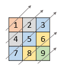
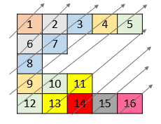

1424. 对角线遍历 II
同一条对角线 r+c 相同：按 r+c 分桶（行号递增扫入，桶内自然升序），再按编号依次倒出。
思路
- 从右上到左下的对角线上，行号
r递增；同一对角线共享r + c。 - 按行扫描，把每个值放进
r + c号桶：行号递增扫入，桶内天然就是输出顺序。 - 桶数组里可能有空桶（锯齿矩阵短行够不着某条对角线），倒出时空桶自动跳过。
图解
最优解
1import java.util.*;2 3class Solution {4 public int[] findDiagonalOrder(List<List<Integer>> nums) {5 // 同一条对角线的 r+c 相同：按 s = r+c 分桶6 List<List<Integer>> groups = new ArrayList<>();7 int total = 0;8 // 行号从大到小扫入：桶内天然「从下往上」，与题面要求一致9 for (int r = nums.size() - 1; r >= 0; r--) {10 List<Integer> row = nums.get(r);11 for (int c = 0; c < row.size(); c++) {12 while (groups.size() <= r + c) groups.add(new ArrayList<>());13 groups.get(r + c).add(row.get(c));14 total++;15 }16 }17 int[] out = new int[total];18 int k = 0;19 // 对角线编号 s 从小到大，依次倒出每个桶；锯齿够不着的空桶自动跳过20 for (List<Integer> g : groups) {21 for (int v : g) out[k++] = v;22 }23 return out;24 }25}题目
给你一个列表 nums ，里面每一个元素都是一个整数列表。请你依照下面各图的规则，按顺序返回 nums 中对角线上的整数。
示例 1：

输入：nums = [[1,2,3],[4,5,6],[7,8,9]] 输出：[1,4,2,7,5,3,8,6,9]
示例 2：

输入：nums = [[1,2,3,4,5],[6,7],[8],[9,10,11],[12,13,14,15,16]] 输出：[1,6,2,8,7,3,9,4,12,10,5,13,11,14,15,16]
示例 3：
输入：nums = [[1,2,3],[4],[5,6,7],[8],[9,10,11]] 输出：[1,4,2,5,3,8,6,9,7,10,11]
示例 4：
输入：nums = [[1,2,3,4,5,6]] 输出：[1,2,3,4,5,6]
提示：
1 <= nums.length <= 10^51 <= nums[i].length <= 10^51 <= nums[i][j] <= 10^9nums中最多有10^5个数字。
题面取自力扣当前版本。
数据快照 2026-11-04。题面版权归力扣所有，本站点仅供本人学习使用，请勿对外发布。